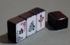
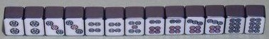
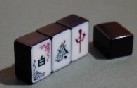
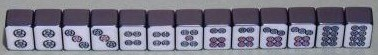
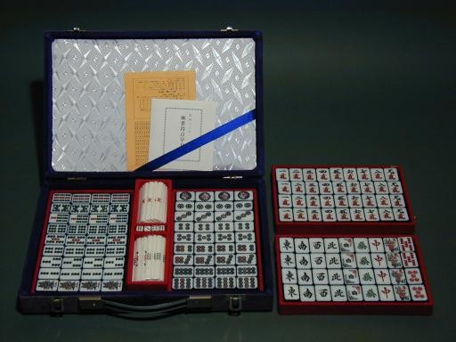

Tile colection 珍奇牌。
（４）額縁牌 国産の合成樹脂牌。たしか２０年位前に購入したモノ。牌面は白いが、その他の５面が額縁のように黒くなっている。単に黒色というのではなく、黒漆で盛り上げ塗装をしたような感じ。手ざわりも重さも大きさも具合が良く、大変使いやすい。  黒塗装の部分がわずかに牌面まで回り込み、非常に上品な雰囲気を漂わせている。 
国産の合成樹脂牌。たしか２０年位前に購入したモノ。牌面は白いが、その他の５面が額縁のように黒くなっている。単に黒色というのではなく、黒漆で盛り上げ塗装をしたような感じ。手ざわりも重さも大きさも具合が良く、大変使いやすい。  黒塗装の部分がわずかに牌面まで回り込み、非常に上品な雰囲気を漂わせている。 
画像が大きすぎて、枠に収まらなかった。(^-^； 
以前へ 以降へ 目次へ